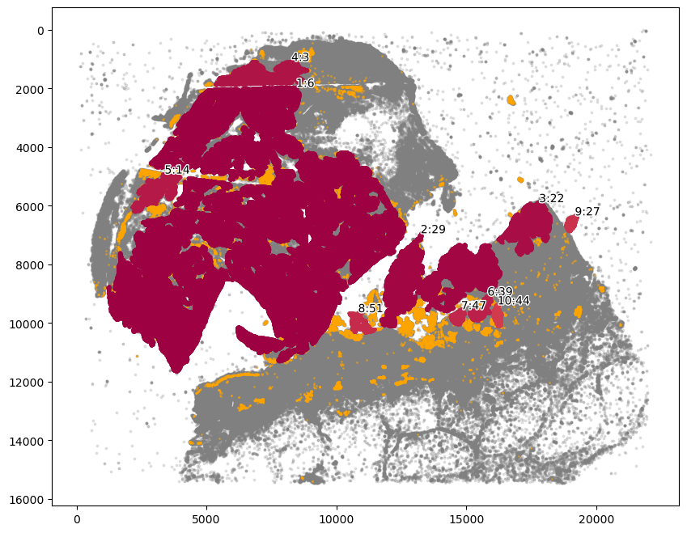
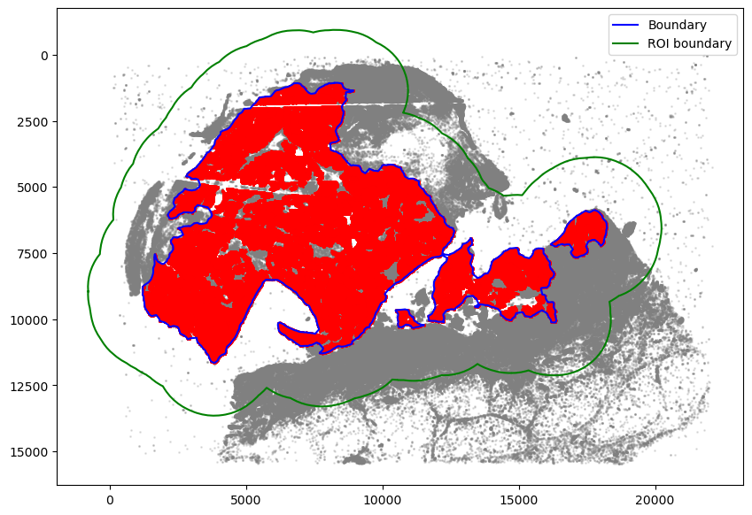
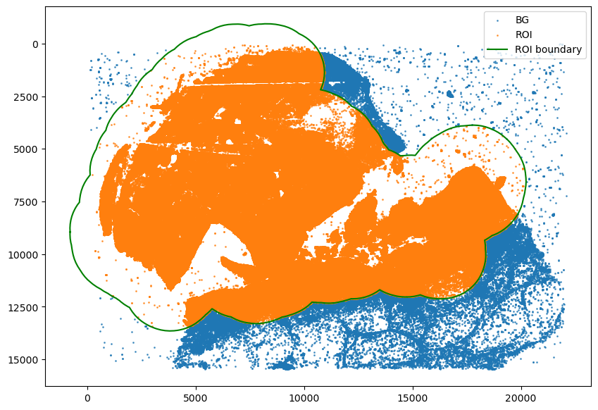
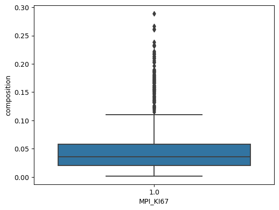
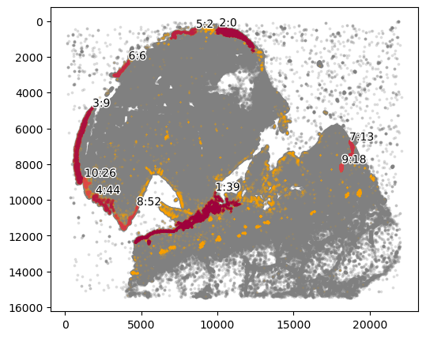
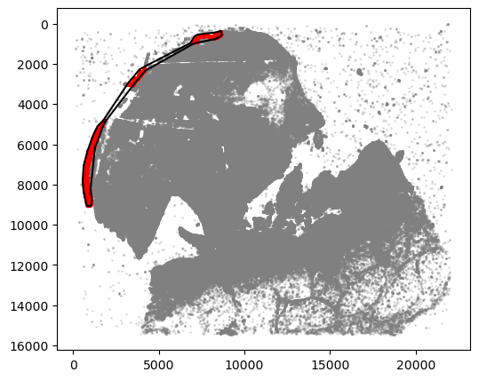
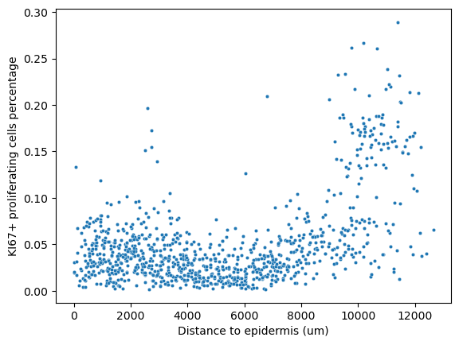

2: Tumor Proliferation Analysis
Demonstrate the usage of SpatialCells to analyse tumor cell proliferation, especially using a multivariate proliferation index (MPI) adapted from Gaglia et al. 2022 https://doi.org/10.1038/s41556-022-00860-9
@author: Guihong Wan and Boshen Yan
@date: Sept 28, 2023
@last updated: Oct 6, 2023
[1]:
import numpy as np
import matplotlib.pyplot as plt
import seaborn as sns
import anndata as ad
import spatialcells as spc
Load data
[2]:
adata = ad.read_h5ad("../../data/MEL1_adata.h5ad")
spc.prep.setGate(adata, "SOX10_cellRingMask", 7.9, debug=True)
spc.prep.setGate(adata, "KERATIN_cellRingMask", 6.4, debug=True)
SOX10_cellRingMask_positive
False 566576
True 544009
Name: count, dtype: int64
KERATIN_cellRingMask_positive
False 1067400
True 43185
Name: count, dtype: int64
Sliding window Analyses
We conduct a sliding window composition analysis to understand the spatial distribution of proliferating tumor cells.
Compute MPI
[3]:
help(spc.msmt.getMPI)
Help on function getMPI in module spatialcells.measurements._getMPI:
getMPI(adata, prolif_markers, arrest_markers, thresh_prolif=0.5, thresh_arrest=0.5, use_obs=False, use_layer=None, col_name='MPI', inplace=True)
Get MPI from a list of markers and thresholds, adapted from Gaglia et al. 2022
https://doi.org/10.1038/s41556-022-00860-9. The MPI is defined as follows:
-1 if max(arrest_markers) > thresh_arrest
1 else if max(prolif_markers) > thresh_prolif
0 otherwise
:param adata: AnnData object
:param prolif_marker: List of proliferation markers
:param arrest_markers: List of arrest markers
:param thresh_prolif: Threshold for proliferation. Default is 0.5
:param thresh_arrest: Threshold for arrest, which should be set
based on the expression levels of KI67 marker. Default is 0.5
:param use_obs: If True, use adata.obs[use_obs] to get the markers.
Overrides use_layer. If use_obs==False and use_layer is None, use adata.X
:param use_layer: Layer to use for the analysis.
If use_obs==False and use_layer is None, use adata.X
:param col_name: Name of the column to add to adata.obs
:param inplace: If True, add the column to adata.obs.
If False, return a copy of adata with the column added
:return: None, adds a column to adata.obs
[4]:
spc.msmt.getMPI(
adata,
prolif_markers=["KI67_cellRingMask"],
arrest_markers=[],
thresh_prolif=7.2,
thresh_arrest=0.5,
use_layer=None,
col_name="MPI_KI67",
inplace=True,
)
adata.obs["MPI_KI67"].value_counts()
No arrest markers found. Skipping.
[4]:
MPI_KI67
0.0 1055001
1.0 55584
Name: count, dtype: int64
[5]:
adata.obs_keys
[5]:
<bound method AnnData.obs_keys of AnnData object with n_obs × n_vars = 1110585 × 6
obs: 'X_centroid', 'Y_centroid', 'SOX10_cellRingMask_positive', 'KERATIN_cellRingMask_positive', 'MPI_KI67'
uns: 'all_markers'>
After calculating MPI, we draw an extended region boundary of the tumor region for the sliding window.
[6]:
marker = ["SOX10_cellRingMask_positive"]
communitycolumn = "COI_community"
ret = spc.spatial.getCommunities(adata, marker, eps=60, newcolumn=communitycolumn)
fig, ax = plt.subplots(figsize=(10, 8))
spc.plt.plotCommunities(
adata, ret, communitycolumn, plot_first_n_clusters=10, s=2, fontsize=10, ax=ax
)
ax.invert_yaxis()
plt.show()

[7]:
communityIndexList = [6, 3, 14, 51, 29, 47, 39, 44, 22]
boundary = spc.spatial.getBoundary(
adata, communitycolumn, communityIndexList, alpha=130
)
boundary = spc.spa.pruneSmallComponents(boundary, min_edges=50, holes_min_edges=500)
roi_boundary = spc.spa.getExtendedBoundary(boundary, offset=2000)
markersize = 1
fig, ax = plt.subplots(figsize=(10, 7))
## all points
ax.scatter(
*zip(*adata.obs[["X_centroid", "Y_centroid"]].to_numpy()),
s=markersize,
color="grey",
alpha=0.2
)
# Points in selected commnities
xy = adata.obs[adata.obs[communitycolumn].isin(communityIndexList)][
["X_centroid", "Y_centroid"]
].to_numpy()
ax.scatter(xy[:, 0], xy[:, 1], s=markersize, color="r")
# Bounds of points in selected commnities
spc.plt.plotBoundary(boundary, ax=ax, label="Boundary", color="b")
spc.plt.plotBoundary(roi_boundary, ax=ax, label="ROI boundary", color="g")
ax.invert_yaxis()
plt.legend(loc="upper right")
plt.show()

Assign cells to the region
[8]:
spc.spatial.assignPointsToRegions(
adata, [roi_boundary], ["ROI"], assigncolumn="region", default="BG"
)
point_size = 1
fig, ax = plt.subplots(figsize=(10, 7))
for region in sorted(set(adata.obs["region"])):
tmp = adata.obs[adata.obs.region == region]
ax.scatter(
*zip(*tmp[["X_centroid", "Y_centroid"]].to_numpy()),
s=point_size,
alpha=0.7,
label=region
)
# Bounds of points in selected commnities
spc.plt.plotBoundary(roi_boundary, ax=ax, label="ROI boundary", color="g")
plt.legend(loc="upper right")
ax.invert_yaxis()
plt.show()
1094867it [00:53, 20572.10it/s]
Assigned points to region: ROI

[9]:
spc.msmt.getRegionComposition(
adata, ["SOX10_cellRingMask_positive", "MPI_KI67"], regions="ROI"
)
[9]:
| SOX10_cellRingMask_positive | MPI_KI67 | cell_count | composition | |
|---|---|---|---|---|
| 0 | True | 0.0 | 516886 | 0.951852 |
| 1 | False | 0.0 | 455092 | 0.940350 |
| 2 | False | 1.0 | 28868 | 0.059650 |
| 3 | True | 1.0 | 26146 | 0.048148 |
[10]:
# only tumor cells
adata1 = adata[adata.obs["SOX10_cellRingMask_positive"]]
print(adata1.obs.shape)
size = 300
prolif_df_ki67 = spc.msmt.getSlidingWindowsComposition(
adata1,
size,
size,
"MPI_KI67",
region_subset=["ROI"],
min_cells=50,
)
prolif_df_ki67.head()
(544009, 7)
[10]:
| MPI_KI67 | cell_count | composition | X_start | Y_start | window_size | step_size | |
|---|---|---|---|---|---|---|---|
| 0 | 0.0 | 65 | 0.866667 | 966 | 8849 | 300 | 300 |
| 1 | 1.0 | 10 | 0.133333 | 966 | 8849 | 300 | 300 |
| 0 | 0.0 | 53 | 1.000000 | 1266 | 8249 | 300 | 300 |
| 0 | 0.0 | 260 | 0.996169 | 1266 | 8549 | 300 | 300 |
| 1 | 1.0 | 1 | 0.003831 | 1266 | 8549 | 300 | 300 |
[11]:
def threshold_my_cmap(cmap, threshold, val=0):
from matplotlib.colors import ListedColormap
import matplotlib
colormap = matplotlib.colormaps[cmap]
newcolors = colormap(np.linspace(0, 1, 256))
color = np.array([val, val, val, 1])
newcolors[:threshold, :] = color
newcmp = ListedColormap(newcolors)
return newcmp
myGreens = threshold_my_cmap("Greens", 2, 1)
myReds = threshold_my_cmap("Reds", 2, 1)
mask = spc.msmt.get_comp_mask(prolif_df_ki67, "MPI_KI67", [1.0], size)
[12]:
fig, ax = plt.subplots(figsize=(10, 7))
plt.imshow(mask, alpha=0.9, cmap=myReds, extent=(0, 1, 0, 1))
cbar = plt.colorbar()
cbar.ax.set_ylabel("Percentage of Tumor cells with MPI = 1")
for region in sorted(set(adata.obs["region"])):
tmp = adata.obs[adata.obs.region == region].sample(frac=0.1)
ax.scatter(
*zip(*tmp[["X_centroid", "Y_centroid"]].to_numpy()),
s=1,
alpha=0.02,
color="grey"
)
spc.plt.plotBoundary(roi_boundary, ax=ax, label="ROI boundary", color="g")
ax.imshow(mask, alpha=1, cmap=myReds)
plt.legend(loc="upper right", markerscale=10)
ax.invert_yaxis()
ax.set_ylim(18000, -2000)
ax.set_xlim(-2000, 22000)
# plt.savefig("MPI_KI67_ROI.png", dpi=300)
plt.show()

[13]:
sns.boxplot(
data=prolif_df_ki67[prolif_df_ki67["MPI_KI67"] == 1],
x="MPI_KI67",
y="composition",
)
[13]:
<Axes: xlabel='MPI_KI67', ylabel='composition'>

We can also look at the distance of each window from the epidermis to capture if the tumor is undergoing horizontal or vertical growth.
[14]:
# adata.obs["keratinocytes"] = adata.obs["phenotype_large_cohort"].isin(["Keratinocytes"])
marker = ["KERATIN_cellRingMask_positive"]
communitycolumn = "epi_community"
ret = spc.spatial.getCommunities(adata, marker, eps=100, newcolumn=communitycolumn)
plot_first_n_clusters = 10
fig, ax = plt.subplots(figsize=(6, 5))
spc.plt.plotCommunities(
adata,
ret,
communitycolumn,
plot_first_n_clusters=plot_first_n_clusters,
s=0.1,
fontsize=10,
ax=ax,
)
ax.invert_yaxis()
plt.show()

[15]:
communityIndexList = [2, 6, 9]
epi_boundary = spc.spa.getBoundary(
adata, communitycolumn, communityIndexList, alpha=3000
)
markersize = 1
fig, ax = plt.subplots(figsize=(6, 5))
## all points
ax.scatter(
*zip(*adata.obs[["X_centroid", "Y_centroid"]].to_numpy()),
s=markersize,
color="grey",
alpha=0.2
)
# Points in selected commnities
xy = adata.obs[adata.obs[communitycolumn].isin(communityIndexList)][
["X_centroid", "Y_centroid"]
].to_numpy()
ax.scatter(xy[:, 0], xy[:, 1], s=markersize, color="r")
spc.plt.plotBoundary(epi_boundary, ax=ax, linewidth=1.5, color="k")
ax.invert_yaxis()
plt.show()

[16]:
prolif_df_ki67["x"] = prolif_df_ki67["X_start"] + prolif_df_ki67["window_size"] / 2
prolif_df_ki67["y"] = prolif_df_ki67["Y_start"] + prolif_df_ki67["window_size"] / 2
prolif_adata = ad.AnnData(obs=prolif_df_ki67)
spc.msmt.getDistanceFromObject(
prolif_adata,
epi_boundary,
x="x",
y="y",
region_col="MPI_KI67",
region_subset=[1.0]
)
/Users/ghwan/opt/anaconda3/envs/spatialcells/lib/python3.10/site-packages/anndata/_core/anndata.py:183: ImplicitModificationWarning: Transforming to str index.
warnings.warn("Transforming to str index.", ImplicitModificationWarning)
/Users/ghwan/opt/anaconda3/envs/spatialcells/lib/python3.10/site-packages/anndata/_core/anndata.py:1906: UserWarning: Observation names are not unique. To make them unique, call `.obs_names_make_unique`.
utils.warn_names_duplicates("obs")
0it [00:00, ?it/s]
987it [00:00, 33236.81it/s]
[17]:
prolif_adata.obs
[17]:
| MPI_KI67 | cell_count | composition | X_start | Y_start | window_size | step_size | x | y | distance | |
|---|---|---|---|---|---|---|---|---|---|---|
| 0 | 0.0 | 65 | 0.866667 | 966 | 8849 | 300 | 300 | 1116.0 | 8999.0 | NaN |
| 1 | 1.0 | 10 | 0.133333 | 966 | 8849 | 300 | 300 | 1116.0 | 8999.0 | 53.498597 |
| 0 | 0.0 | 53 | 1.000000 | 1266 | 8249 | 300 | 300 | 1416.0 | 8399.0 | NaN |
| 0 | 0.0 | 260 | 0.996169 | 1266 | 8549 | 300 | 300 | 1416.0 | 8699.0 | NaN |
| 1 | 1.0 | 1 | 0.003831 | 1266 | 8549 | 300 | 300 | 1416.0 | 8699.0 | 321.845776 |
| ... | ... | ... | ... | ... | ... | ... | ... | ... | ... | ... |
| 1 | 1.0 | 9 | 0.039474 | 18966 | 6149 | 300 | 300 | 19116.0 | 6299.0 | 11913.575943 |
| 0 | 0.0 | 720 | 0.892193 | 18966 | 6449 | 300 | 300 | 19116.0 | 6599.0 | NaN |
| 1 | 1.0 | 87 | 0.107807 | 18966 | 6449 | 300 | 300 | 19116.0 | 6599.0 | 12061.068139 |
| 0 | 0.0 | 82 | 0.845361 | 18966 | 6749 | 300 | 300 | 19116.0 | 6899.0 | NaN |
| 1 | 1.0 | 15 | 0.154639 | 18966 | 6749 | 300 | 300 | 19116.0 | 6899.0 | 12214.149072 |
1997 rows × 10 columns
[18]:
sns.scatterplot(
data=prolif_adata.obs[prolif_adata.obs["MPI_KI67"] == 1.0],
x="distance",
y="composition",
s=10,
)
plt.ylabel("KI67+ proliferating cells percentage")
plt.xlabel("Distance to epidermis (um)")
[18]:
Text(0.5, 0, 'Distance to epidermis (um)')
